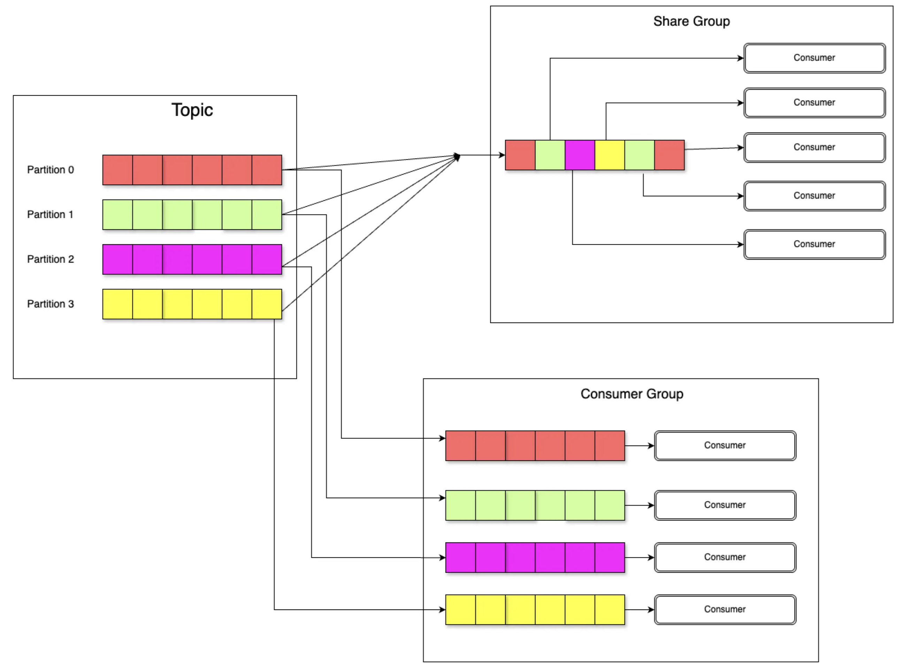
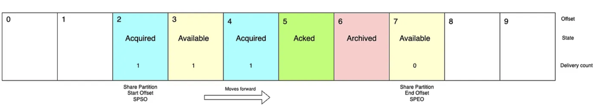
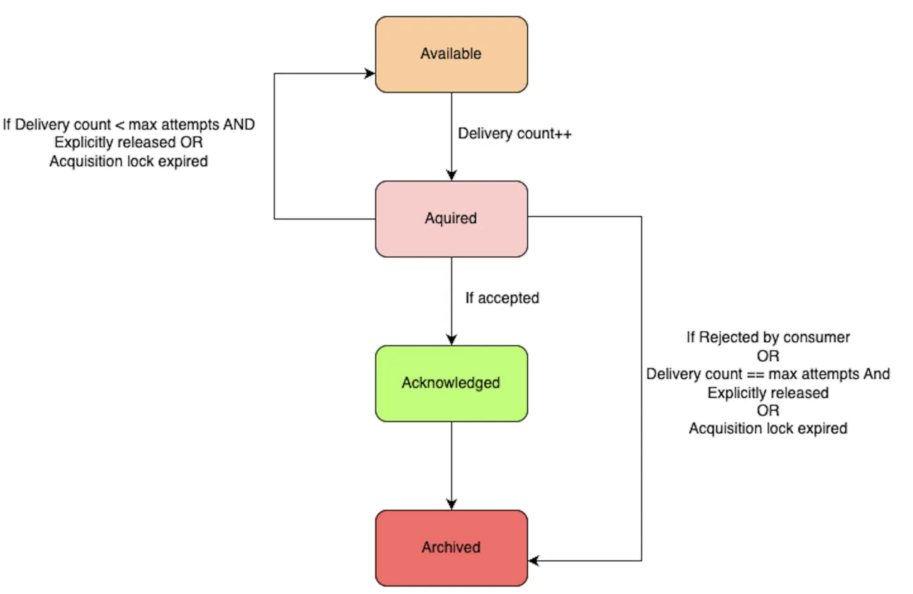

Kafka has always been a distributed log, not a message queue — and that's been both its strength and its limitation. KIP-932, shipping in Kafka 4.0, introduces Share Groups: multiple consumers sharing the same partition, per-record acknowledgements, and a state machine that handles retries and failures gracefully. Queue semantics, Kafka style.
If you've been working with Apache Kafka, you know it's a powerhouse for streaming data. But have you ever wished it could handle simple, queue-like tasks a bit more smoothly? You're not alone.
Traditionally, Kafka excels at high-volume, ordered streams — think of it as a super-efficient assembly line where each piece is processed in sequence. Great for real-time analytics or log processing. But what about when you just need to hand out tasks to workers, and you don't care about the order? That's where queues come in, and that's where Kafka has historically struggled.
The Kafka "Queue" Conundrum
If you've ever said "Kafka queue," you might have gotten a raised eyebrow from a Kafka expert. That's because at its core, Kafka is a distributed log, not a traditional message queue. It's built on topics and partitions, and consumers work in groups where each consumer has exclusive access to certain partitions.
This design has real benefits — massive throughput, ordered processing within partitions — but it also has meaningful limitations:
- To add more consumers, you often need more partitions, which creates operational overhead.
- If one message fails, it can hold up everything else in that partition.
- Consumer count is capped at the number of partitions — you can't scale consumers independently.
Enter KIP-932: Share Groups
That's where KIP-932, or "Queues for Kafka," comes in. With Kafka 4.0, we get a new feature called share groups — a way to make Kafka behave more like a traditional queue when you need it to, without giving up what makes Kafka great.
What Are Share Groups?
Share groups let multiple consumers work together on the same partition. You can scale out your consumers without worrying about the number of partitions — like a busy restaurant kitchen where multiple chefs can work on the same order simultaneously.
- Consumers in a share group can pull messages from any partition — efficient load distribution with no static assignment.
- Messages are acknowledged one by one. A failed message doesn't block the entire partition.
- Kafka tracks the state of each message (
Available,Acquired,Acknowledged,Archived), so you know exactly where it is in the pipeline.
Core Architecture
Share Partitions: Shared Consumption Across the Group
Share groups use Share Partitions — a logical view of topic partitions managed by the partition leader. Unlike traditional consumer groups where each consumer owns specific partitions, share groups allow multiple consumers to dynamically pull records from any partition. This eliminates the need for over-partitioning and enables true elastic scaling.

In-Flight Records: Per-Record State Tracking
A core feature of share groups is their ability to track the processing state of in-flight records — messages that have been fetched by consumers but not yet acknowledged. Each in-flight record has:
- A state:
Available,Acquired,Acknowledged, orArchived - A delivery count: how many times this record has been attempted
In-flight records live within a window bounded by the Share Partition Start Offset (SPSO) and the Share Partition End Offset (SPEO). As messages are acknowledged, the SPSO advances — moving the window forward.

Let's walk through what's happening in the diagram above:
- Records 2 & 4 (Acquired, delivery count 1) — currently being reprocessed by a consumer after a prior failure.
- Record 3 (Available, delivery count 1) — failed once, now waiting to be picked up again.
- Record 5 (Acknowledged) — successfully processed and done.
- Record 6 (Archived) — encountered a non-retriable failure; will not be retried.
- Record 7 (Available, delivery count 0) — waiting for its first processing attempt.
State Machine: How Records Transition
The state machine defines exactly how a record moves through its lifecycle. When fetched, it becomes Acquired. Successful processing moves it to Acknowledged. Failures trigger retries back to Available — or permanent archiving once the delivery count hits the maximum.

A key safety mechanism here is the acquisition lock timeout: if a consumer acquires a record but crashes without acknowledging it, the lock expires and the record returns to Available for another consumer to pick up.
A Quick Look at the Code
Kafka 4.0 introduces KafkaShareConsumer, which works similarly to the familiar KafkaConsumer. The key difference is per-record acknowledgement with explicit accept or release semantics.
Properties props = new Properties();
props.setProperty("bootstrap.servers", "localhost:9092");
props.setProperty("group.id", "my-share-group");
try (KafkaShareConsumer<String, String> consumer = new KafkaShareConsumer<>(
props,
new StringDeserializer(),
new StringDeserializer())) {
consumer.subscribe(Arrays.asList("my-topic"));
while (true) {
ConsumerRecords<String, String> records = consumer.poll(Duration.ofMillis(100));
records.forEach(record -> {
try {
// Process the record
System.out.println("Processing: " + record.value());
// Acknowledge success — record moves to Acknowledged
consumer.acknowledge(record, AcknowledgeType.ACCEPT);
} catch (Exception e) {
System.out.println("Failed: " + record.value() + " — releasing for retry");
// Release back to Available for another consumer to retry
consumer.acknowledge(record, AcknowledgeType.RELEASE);
}
});
// Commit all pending acknowledgements
consumer.commitSync();
}
}The three acknowledgement types map directly to the state machine:
ACCEPT
Acknowledged
Processing succeeded
RELEASE
Available
Transient failure — retry later
REJECT
Archived
Permanent failure — skip it
Things to Keep in Mind
Share groups are an early access feature in Kafka 4.0. Before you reach for them in production:
- The API may change in future releases — treat it as unstable.
- Dead letter queues are not included in the first release.
- For strict ordering requirements, classic consumer groups are still the right choice.
- Share groups are best suited for task distribution workloads, not event streaming pipelines where ordering matters.
If you need order, use consumer groups. If you need scale and resilience for task workers, share groups are the answer.
What's Next?
The Kafka community is actively working on improving share groups. Expect dead-letter queue support, improved retry configuration, and more operational tooling in future releases. KIP-932 is the foundation — the ecosystem will grow around it.
Wrapping Up
Share groups bring a new level of flexibility to Apache Kafka, opening it up to use cases that were previously awkward or impossible. Whether you're building a job queue, distributing background tasks, or just need to scale consumers beyond partition count, share groups are a powerful new tool in your Kafka arsenal.
Have you tried share groups in Kafka 4.0 yet? I'd love to hear how you're using them — or what you're still waiting for before you make the switch.